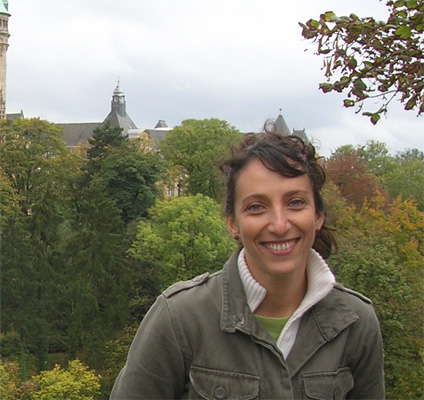
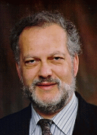

Professor Paul Nunez
Emeritus Professor of Biomedical Engineering
Tulane University, USA
Chief Scientist, Brain Physics, LLC
Prof. Nunez is one of the world's leading experts on brain rhythms. His classic work on "EEG and Brain Dynamics" (second edition with R. Srinivasan) states, "For more than a century, brain scientists have pursued the Holy Grail of connecting psychology with physiology. ... Consciousness is evidently associated with widespread cortical interactions required to provide some minimal level of 'binding' of remote cell groups."
- - - - - - - - - - - - - - - - - - - - - - - - - - - - - - - - - - - - - - - - - - - - Dr. Lawrence M. Ward
Dept of Psychology and The Brain Research Center
University of British Columbia, Vancouver, Canada
Prof. Ward's book, Dynamical Cognitive Science (MIT Press, 2002), pioneered efforts to integrate cognitive and brain theory.
- - - - - - - - - - - - - - - - - - - - - - - - - - - - - - - - - - - - - - - - - - - - Dr. Lucia Melloni

Brain Imaging Center Frankfurt, Germany
Pontificia Universidad Catolica de Chile, Santiago, Chile.
Prof. Melloni and collagues have recently found that "Synchronization of Neural Activity across Cortical Areas Correlates with Conscious Perception."
- - - - - - - - - - - - - - - - - - - - - - - - - - - - - - - - - - - - - - -
Dr. Wolfgang Klimesch
Dept. of Physiological Psychology
University of Salzburg, Austria
- - - - - - - - - - - - - - - - - - - - - - - - - - - - - - - - - - - - - - - - - - - -
Dr. Satu Palva
Neuroscience Center
University of Helsinki, Finland
Profs. Satu Palva and J. Matias Palva have proposed that cross-frequency phase synchrony oscillations coordinates the selection and maintenance of neuronal object representations during working memory, perception and consciousness.
- - - - - - - - - - - - - - - - - - - - - - - - - - - - - - - - - - - - - - - - - - - -

Dr. Bernard J. Baars
Senior Fellow in Theoretical Neurobiology
The Neurosciences Institute, San Diego, CA, USA
See also: www.bernardbaars.pbwiki.com and www.nsi.edu
- - - - - - - - - - - - - - - - - - - - - - - - - - - - - - - - - - - - - - - - - - - -
Dr. Stan Franklin
W. Harry Feinstone Interdisciplinary Research Professor
The University of Memphis, Memphis, TN, USA
Dr. Baars and Franklin will open the workshop by presenting the LIDA/GWT theory of human cognition, emphasizing plausible brain correlates.
- - - - - - - - - - - - - - - - - - - - - - - - - - - - - - - - - - - - - - - - - - - -
Dr. David B. Edelman
Research Fellow in Experimental Neurobiology
The Neurosciences Institute, San Diego, CA, USA
Our laboratory is investigating mitochondrial dynamics in the brain at both the cellular and organismal levels. We are exploring the signaling pathways that induce mitochondrial movement in neurons.